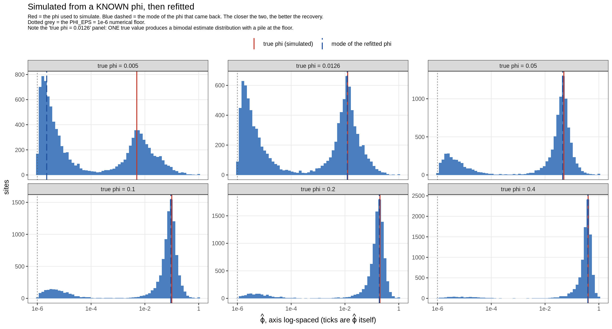
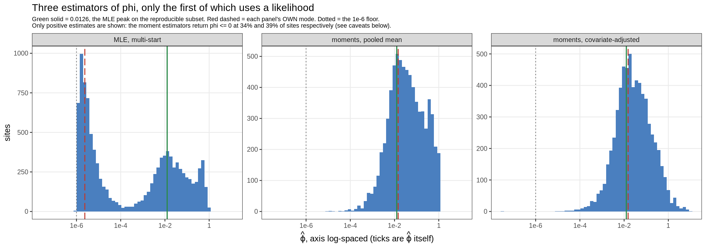
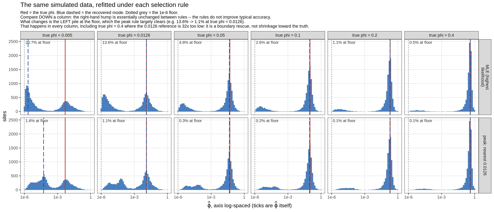
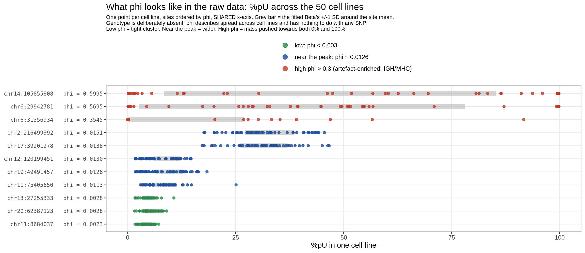
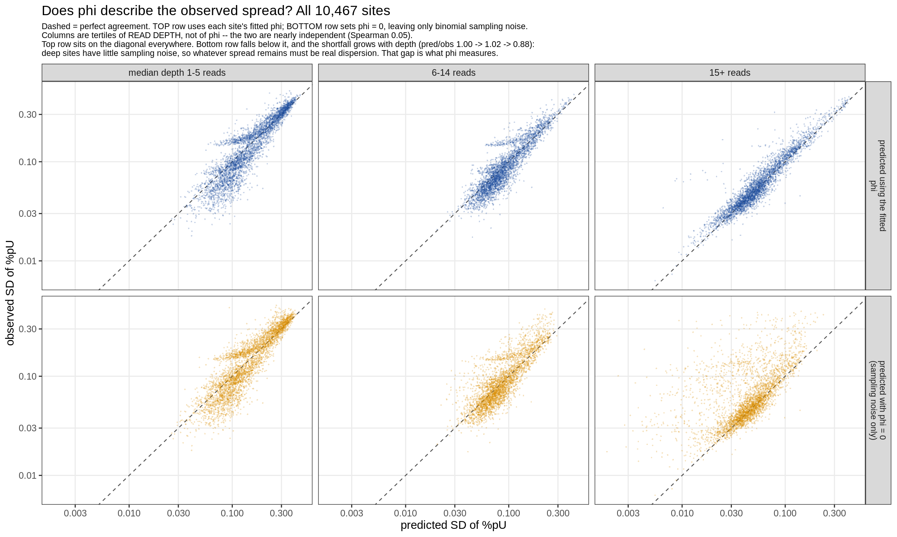
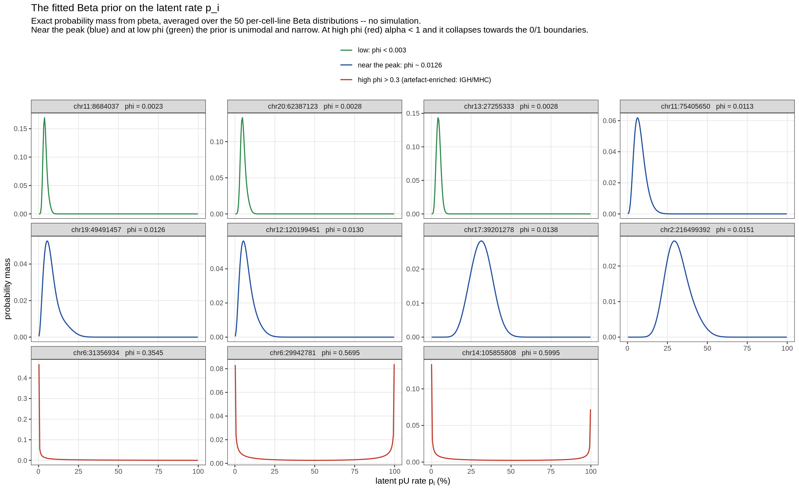

Last updated: 2026-09-14
Checks: 6 1
Knit directory: pumseq/
This reproducible R Markdown analysis was created with workflowr (version 1.7.0). The Checks tab describes the reproducibility checks that were applied when the results were created. The Past versions tab lists the development history.
The R Markdown file has unstaged changes. To know which version of
the R Markdown file created these results, you’ll want to first commit
it to the Git repo. If you’re still working on the analysis, you can
ignore this warning. When you’re finished, you can run
wflow_publish to commit the R Markdown file and build the
HTML.
Great job! The global environment was empty. Objects defined in the global environment can affect the analysis in your R Markdown file in unknown ways. For reproduciblity it’s best to always run the code in an empty environment.
The command set.seed(20260202) was run prior to running
the code in the R Markdown file. Setting a seed ensures that any results
that rely on randomness, e.g. subsampling or permutations, are
reproducible.
Great job! Recording the operating system, R version, and package versions is critical for reproducibility.
Nice! There were no cached chunks for this analysis, so you can be confident that you successfully produced the results during this run.
Great job! Using relative paths to the files within your workflowr project makes it easier to run your code on other machines.
Great! You are using Git for version control. Tracking code development and connecting the code version to the results is critical for reproducibility.
The results in this page were generated with repository version a90f3cb. See the Past versions tab to see a history of the changes made to the R Markdown and HTML files.
Note that you need to be careful to ensure that all relevant files for
the analysis have been committed to Git prior to generating the results
(you can use wflow_publish or
wflow_git_commit). workflowr only checks the R Markdown
file, but you know if there are other scripts or data files that it
depends on. Below is the status of the Git repository when the results
were generated:
Ignored files:
Ignored: analysis/qtl_mapping_summary_cache/
Unstaged changes:
Modified: analysis/qtl_mapping_betabinomial_lowphi.Rmd
Note that any generated files, e.g. HTML, png, CSS, etc., are not included in this status report because it is ok for generated content to have uncommitted changes.
These are the previous versions of the repository in which changes were
made to the R Markdown
(analysis/qtl_mapping_betabinomial_lowphi.Rmd) and HTML
(docs/qtl_mapping_betabinomial_lowphi.html) files. If
you’ve configured a remote Git repository (see
?wflow_git_remote), click on the hyperlinks in the table
below to view the files as they were in that past version.
| File | Version | Author | Date | Message |
|---|---|---|---|---|
| Rmd | a90f3cb | XSun | 2026-09-14 | update |
| html | a90f3cb | XSun | 2026-09-14 | update |
| Rmd | fa51397 | XSun | 2026-09-14 | update |
| html | fa51397 | XSun | 2026-09-14 | update |
| Rmd | 622e61a | XSun | 2026-09-14 | update |
| html | 622e61a | XSun | 2026-09-14 | update |
| Rmd | fe36e47 | XSun | 2026-09-14 | update |
| html | fe36e47 | XSun | 2026-09-14 | update |
| Rmd | cb61689 | XSun | 2026-09-14 | update |
| html | cb61689 | XSun | 2026-09-14 | update |
suppressMessages({ library(data.table); library(ggplot2) })
knitr::opts_chunk$set(echo = TRUE, warning = FALSE, message = FALSE,
fig.align = "center", fig.width = 10)
PSI <- "/project/xinhe/xsun/pumseq/pumseq_processed/psi_qtl"
LP <- file.path(PSI, "qtl_betabinomial/low_phi_validation")
RC <- file.path(PSI, "qtl_betabinomial/phi_recovery")
MLE_PEAK <- 0.0126; PHI_EPS <- 1e-6The mode of the fitted overdispersion across sites is φ ≈ 0.0126, and that number carries weight: it is the reference value the φ-selection heuristic aims at. It looks implausibly small. At our median depth of 8 reads it inflates the variance of y/n by only about 10% over a binomial, and 79.2% of sites cannot reject φ = 0 at all. The natural suspicion is that 0.0126 describes our estimator — a nearly flat likelihood with a hard boundary at zero — rather than the dispersion in the data.
This page answers that objection in two steps. §2 establishes that the estimate is correct — three checks with non-overlapping failure modes, one of which uses no likelihood at all. §3 then asks what the number means: why so small a value is the expected answer rather than a suspicious one, why dispersion still has to be modelled when most sites cannot distinguish it from zero, and what such a site looks like in the raw counts. §4 states what can and cannot be concluded.
Every φ on this page is a 3-start estimate. The fitter runs the optimiser from φ₀ ∈ {0.01, 0.1, 0.5} and keeps the highest-likelihood solution (
BB_PHI_STARTS=0.01,0.1,0.5,BB_PHI_SELECT=loglik) — the plain MLE
Before asking what φ ≈ 0.013 means, we have to establish that it is the number — that it describes the data rather than the machinery that produced it. Three checks, deliberately chosen so their failure modes do not overlap: one that tests the estimator against a known truth, one that avoids the likelihood entirely, and one that bypasses estimation altogether and asks only what the raw scatter permits.
The cleanest test is to generate data where the answer is known. Per site, take the real depths n_i and the real fitted mean vector μ_i from the k = 3 null (μ_i varies across cell lines because logit μ_i = β₀ + z_iᵀγ), then for a grid of true φ simulate
\[p_i \sim \mathrm{Beta}\!\left(\mu_i\tfrac{1-\varphi}{\varphi},\ (1-\mu_i)\tfrac{1-\varphi}{\varphi}\right), \qquad y_i \sim \mathrm{Binomial}(n_i, p_i)\]
and refit with the same multi-start fitter and the same covariates. The simulated data therefore face exactly the estimation problem the real data pose.
RS <- fread(file.path(RC, "recovery_summary.tsv"), sep = "\t")
knitr::kable(RS, caption = "Recovery of a known phi at our real depths. The MODE is what matters, because it is the statistic the heuristic uses.")| phi_true | sites | mode phi_hat | median phi_hat | q25 | q75 | % at 1e-6 floor | % below 1e-4 | % identified | bias: mode / truth |
|---|---|---|---|---|---|---|---|---|---|
| 0.0050 | 10076 | 0.0000022 | 0.0000108 | 2.40e-06 | 0.00518 | 20.0% | 57.8% | 11.1% | 0.000 |
| 0.0126 | 10046 | 0.0121900 | 0.0023030 | 3.20e-06 | 0.01320 | 14.5% | 45.5% | 21.8% | 0.967 |
| 0.0500 | 9994 | 0.0453300 | 0.0334900 | 3.81e-04 | 0.05510 | 5.3% | 24.5% | 49.8% | 0.907 |
| 0.1000 | 9923 | 0.0923500 | 0.0756100 | 3.33e-02 | 0.11000 | 2.7% | 15.9% | 65.1% | 0.923 |
| 0.2000 | 9800 | 0.1892000 | 0.1621000 | 9.53e-02 | 0.22300 | 1.2% | 9.4% | 77.5% | 0.946 |
| 0.4000 | 9491 | 0.3905000 | 0.3474000 | 2.36e-01 | 0.43700 | 0.5% | 5.2% | 87.4% | 0.976 |
The mode is very nearly unbiased from 0.0126 upwards — within 3% at 0.0126 itself and within 10% across the whole range up to 0.4. Only at a true φ of 0.005 does it collapse to the floor, which is below what our depth can resolve.
RB <- fread(file.path(RC, "recovery_by_site.txt.gz"), sep = "\t")[is.finite(phi_hat)]
PT <- sort(unique(RB$phi_true))
RB[, panel := factor(sprintf("true phi = %g", phi_true),
levels = sprintf("true phi = %g", PT))]
# two reference lines per panel: the phi used to SIMULATE, and the mode of what
# came back. Their agreement is the whole result, so nothing else is marked.
vl <- melt(merge(unique(RB[, .(panel, phi_true)]),
RS[, .(phi_true, mode = `mode phi_hat`)], by = "phi_true"),
id.vars = c("panel", "phi_true"), measure.vars = c("phi_true", "mode"),
variable.name = "what", value.name = "x")
vl[, what := factor(ifelse(what == "phi_true", "true phi (simulated)",
"mode of the refitted phi"),
levels = c("true phi (simulated)", "mode of the refitted phi"))]
ggplot(RB, aes(phi_hat)) +
geom_histogram(bins = 60, fill = "#4a7fbf", colour = NA) +
geom_vline(xintercept = PHI_EPS, colour = "grey35", linetype = "dotted") +
geom_vline(data = vl, aes(xintercept = x, colour = what, linetype = what),
linewidth = 0.7) +
facet_wrap(~ panel, nrow = 2, scales = "free_y") +
scale_x_log10(breaks = 10^seq(-6, 0, 2), labels = c("1e-6", "1e-4", "1e-2", "1")) +
scale_colour_manual(values = c("true phi (simulated)" = "#c0392b",
"mode of the refitted phi" = "#1f4e9c"), name = NULL) +
scale_linetype_manual(values = c("true phi (simulated)" = "solid",
"mode of the refitted phi" = "longdash"), name = NULL) +
labs(x = expression(hat(varphi)*", axis log-spaced (ticks are "*hat(varphi)*" itself)"),
y = "sites",
title = "Simulated from a KNOWN phi, then refitted",
subtitle = paste(
"Red = the phi used to simulate. Blue dashed = the mode of the phi that came back. The closer the two, the better the recovery.",
"Dotted grey = the PHI_EPS = 1e-6 numerical floor.",
"Note the 'true phi = 0.0126' panel: ONE true value produces a bimodal estimate distribution with a pile at the floor.",
sep = "\n")) +
theme_bw(base_size = 11) +
theme(legend.position = "top", panel.grid.minor = element_blank(),
plot.subtitle = element_text(size = 8))
Two further results fall out of this, both of which correct earlier readings of the real φ distribution.
The low-end bimodality is an artefact of the
estimator. Look at the true phi = 0.0126 panel: a
single true value produces both a pile at the floor and a clean
hump at the truth. So the floor pile and the ~46% of real sites below
10⁻⁴ are not a distinct population of near-binomial sites — they are
what this estimator does to low-φ sites at 8 reads. An earlier version
of the optimiser page described these as two regimes; that reading was
wrong.
The median is badly biased; only the mode is usable. At a true φ of 0.0126 the median estimate is 0.0023, five-fold low, because half the estimates fall into the artefact pile. This is why the reference value must be a mode and not an average — a point in favour of how the heuristic was constructed.
But an unbiased mode does NOT mean accurate per-site estimates, and the gap is large. The mode is a property of the distribution; individual sites are frequently wrong by orders of magnitude. Scored against the known truth:
RB2 <- fread(file.path(RC, "recovery_by_site.txt.gz"), sep = "\t")[is.finite(phi_hat)]
knitr::kable(RB2[, { r <- phi_hat/phi_true[1]
.(sites = .N,
`within 2x of truth` = sprintf("%.1f%%", 100*mean(r > 0.5 & r < 2)),
`within 10x` = sprintf("%.1f%%", 100*mean(r > 0.1 & r < 10)),
`more than 10x TOO LOW` = sprintf("%.1f%%", 100*mean(r < 0.1)),
`at the 1e-6 floor` = sprintf("%.1f%%", 100*mean(phi_hat < 2e-6)),
`median fold error` = round(median(pmax(r, 1/r)), 1)) },
by = .(`true phi` = phi_true)][order(`true phi`)],
caption = "Per-site accuracy against known truth. Accuracy is strongly phi-dependent: phi is only reliably estimated per site when it is LARGE, and the modal value is precisely where it is not.")| true phi | sites | within 2x of truth | within 10x | more than 10x TOO LOW | at the 1e-6 floor | median fold error |
|---|---|---|---|---|---|---|
| 0.0050 | 10076 | 18.2% | 36.3% | 59.8% | 20.0% | 461.4 |
| 0.0126 | 10046 | 29.0% | 50.5% | 48.2% | 14.5% | 9.0 |
| 0.0500 | 9994 | 51.8% | 72.8% | 26.9% | 5.3% | 1.9 |
| 0.1000 | 9923 | 62.0% | 81.9% | 18.1% | 2.7% | 1.6 |
| 0.2000 | 9800 | 70.8% | 88.6% | 11.4% | 1.2% | 1.4 |
| 0.4000 | 9491 | 79.3% | 93.0% | 7.0% | 0.5% | 1.3 |
At the truth that matters, φ = 0.0126, only 29.0% of sites land within 2× of it, 48.2% are more than tenfold too low, one site in seven collapses to the floor, and the median fold error is 9×. Accuracy climbs steadily with φ — within-2× goes 18% → 29% → 52% → 62% → 71% → 79% as the truth rises from 0.005 to 0.4, with median fold error falling from 461× to 1.3×.
Since the real φ distribution is dominated by low-φ sites, the same must hold there: most real per-site φ estimates are wrong by a large factor. This is the same fact as “79.2% of sites cannot reject φ = 0”, stated concretely.
It does not, however, undermine the QTL results. The LRT compares null against full at the same site with φ free in both, so where the likelihood is flat both fits slide together and the statistic is largely insensitive to where φ lands. And that is measured rather than assumed: the permutation calibration gives λ = 1.03–1.06 with zero problematic sites at k = 3 (§3.2). A badly-estimated nuisance parameter inside a test verified on permuted data is tolerable; a badly-estimated reported quantity is not. See §4.
Simulating a single true φ = 0.0126 reproduces the real data on every summary:
knitr::kable(data.table(
statistic = c("mode", "% at the 1e-6 floor", "% below 1e-4", "% identified (reject phi=0)"),
`real data` = c("0.0126", "16.3%", "49.1%", "20.8%"),
`simulated, truth = 0.0126` = c(
sprintf("%.4f", RS[phi_true == 0.0126]$`mode phi_hat`),
RS[phi_true == 0.0126]$`% at 1e-6 floor`,
RS[phi_true == 0.0126]$`% below 1e-4`,
RS[phi_true == 0.0126]$`% identified`)),
caption = "A single true phi of 0.0126 reproduces the real distribution's mode, its boundary pile-up, its sub-1e-4 mass and its identification rate.")| statistic | real data | simulated, truth = 0.0126 |
|---|---|---|
| mode | 0.0126 | 0.0122 |
| % at the 1e-6 floor | 16.3% | 14.5% |
| % below 1e-4 | 49.1% | 45.5% |
| % identified (reject phi=0) | 20.8% | 21.8% |
The recovery simulation still relies on fit_bb_mle. A
fully independent check is possible because φ enters the model through
only one quantity, the design effect:
\[\mathrm{Var}(y_i/n_i) = \frac{p(1-p)}{n_i}\bigl[1 + (n_i-1)\varphi\bigr]\]
So a Pearson χ² of the counts against their fitted mean recovers φ by moments. With m covered cell lines and q fitted mean parameters,
\[S = \sum_i \frac{(y_i - n_i\hat\mu_i)^2}{n_i\hat\mu_i(1-\hat\mu_i)}, \qquad \mathbb{E}[S] \approx (m-q) + \varphi\sum_i (n_i-1), \qquad \hat\varphi_{\text{mom}} = \frac{S-(m-q)}{\sum_i (n_i-1)}\]
This is the classic overdispersion moment estimator (the construction behind Tarone 1979). It is closed form — no likelihood, no optimiser, no starting value — so it cannot suffer the bimodal-likelihood failure that made the multi-start fix necessary in the first place.
MS <- fread(file.path(LP, "moment_summary.tsv"), sep = "\t")
knitr::kable(MS, caption = "Two moment variants and the MLE. NB the MLE row's mode is taken over ALL sites, which is the 2.4e-6 floor artefact; the 0.0126 peak comes from the subset where all three optimiser starts agree. The moment estimators need no such subsetting.")| estimator | sites | phi <= 0 | mode (positive values) | median (positive) | q25 | q75 | ratio to MLE peak 0.0126 |
|---|---|---|---|---|---|---|---|
| moments, pooled mean (no covariates, model-free) | 10722 | 3,648 (34.0%) | 0.0146200 | 0.0331600 | 9.82e-03 | 0.1430 | 1.160 |
| moments, covariate-adjusted mean (like-for-like) | 10467 | 4,095 (39.1%) | 0.0151700 | 0.0242400 | 7.76e-03 | 0.0951 | 1.204 |
| MLE, multi-start (for reference) | 10467 | 0 (0.0%) | 0.0000024 | 0.0002384 | 2.90e-06 | 0.0230 | 0.000 |
The moment estimators peak at 0.0146 and 0.0152, against the MLE’s 0.0126 — agreement within 16–20% between methods whose failure modes have nothing in common. That is the direct answer to “is the peak an artefact of your fitter?”.
It also independently vindicates the decision to build the peak on the reproducible subset. Computed over all sites with no filtering, the moment estimators land near 0.015 — close to the subset-based MLE peak of 0.0126, and four orders of magnitude away from the all-sites MLE mode of 2.4×10⁻⁶.
MB <- fread(file.path(LP, "moment_by_site.txt.gz"), sep = "\t")
PL <- rbind(data.table(phi = MB$phi_mle, est = "MLE, multi-start"),
data.table(phi = MB$phi_mom_pooled, est = "moments, pooled mean"),
data.table(phi = MB$phi_mom_adjusted, est = "moments, covariate-adjusted"))
PL <- PL[is.finite(phi) & phi > 0]
PL[, est := factor(est, levels = c("MLE, multi-start", "moments, pooled mean",
"moments, covariate-adjusted"))]
mode_log10 <- function(x) { d <- density(log10(x)); 10^d$x[which.max(d$y)] }
md <- PL[, .(mode = mode_log10(phi)), by = est]
ggplot(PL, aes(phi)) +
geom_histogram(bins = 60, fill = "#4a7fbf", colour = NA) +
geom_vline(xintercept = MLE_PEAK, colour = "#2c8a4a", linewidth = 0.7) +
geom_vline(data = md, aes(xintercept = mode), colour = "#c0392b",
linetype = "longdash", linewidth = 0.6) +
geom_vline(xintercept = PHI_EPS, colour = "grey35", linetype = "dotted") +
facet_wrap(~ est, nrow = 1, scales = "free_y") +
scale_x_log10(breaks = 10^seq(-6, 0, 2), labels = c("1e-6", "1e-4", "1e-2", "1")) +
labs(x = expression(hat(varphi)*", axis log-spaced (ticks are "*hat(varphi)*" itself)"),
y = "sites",
title = "Three estimators of phi, only the first of which uses a likelihood",
subtitle = paste(
"Green solid = 0.0126, the MLE peak on the reproducible subset. Red dashed = each panel's OWN mode. Dotted = the 1e-6 floor.",
"Only positive estimates are shown: the moment estimators return phi <= 0 at 34% and 39% of sites respectively (see caveats below).",
sep = "\n")) +
theme_bw(base_size = 11) +
theme(panel.grid.minor = element_blank(), plot.subtitle = element_text(size = 8))
| Version | Author | Date |
|---|---|---|
| cb61689 | XSun | 2026-09-14 |
Caveats, stated plainly. The moment estimator returns φ ≤ 0 at 34% (pooled) and 39% (adjusted) of sites, meaning the observed scatter was at or below binomial — the moment analogue of the MLE’s pile-up at the floor. Those cannot be a true variance, so the mode is taken over positive values only, and that selection biases it upward. Adjusting for covariates was expected to shrink the gap to the MLE and did not — 0.0152 against the pooled 0.0146 — so the selection, not the mean model, is the likely cause of the residual 16–20%. The moment estimator is also less efficient than the MLE, so its per-site values are noisier.
Independently of any estimator, we can ask which φ reproduces the spread of %pU actually observed across cell lines.
SP <- fread(file.path(LP, "spread_check.tsv"), sep = "\t")
knitr::kable(SP[, .(phi = label, `median predicted SD`, `median observed SD`,
`predicted / observed`, `% sites over-predicted`)],
caption = "A well-chosen phi should sit near predicted/observed = 1 and split the sites about 50/50.")| phi | median predicted SD | median observed SD | predicted / observed | % sites over-predicted |
|---|---|---|---|---|
| 0 (binomial) | 0.0835 | 0.0822 | 1.016 | 50.8% |
| 0.0126 (the peak) | 0.0863 | 0.0822 | 1.051 | 60.1% |
| 0.05 | 0.0949 | 0.0822 | 1.155 | 70.1% |
| 0.2 | 0.1201 | 0.0822 | 1.462 | 82.0% |
| 0.45 (a ‘plausible-looking’ value) | 0.1534 | 0.0822 | 1.867 | 90.1% |
A φ of 0.45 predicts nearly double the spread we observe and over-predicts at 90% of sites. So a substantially larger value is excluded by the raw scatter, with no model fitting involved.
Note honestly that at the median site φ = 0 fits marginally better than 0.0126 (ratio 1.016 versus 1.051). That is the same fact as most sites being unidentifiable, and it is not an argument for the binomial — see §3.2.
Everything above uses the plain MLE. The optimiser page proposes a different rule for unidentifiable sites: of the optima the three starts found, return the one nearest the population mode. On real data we can only check whether that changes calibration — it does not. We cannot check whether it gets φ right, because the truth is unknown.
In simulation the truth is known, so accuracy is measurable. The same simulated datasets were refit under both rules, so differences are attributable to the rule rather than to simulation noise. Note the reference is fixed at 0.0126 while the truth varies — so the rule is tested both where its reference is correct (φ = 0.0126) and where it is 32× too low (φ = 0.4).
(A third variant, applying the peak only to break near-ties in likelihood, was also run and came out indistinguishable from the rule below at every true φ, so it is not shown.)
RA <- fread(file.path(RC, "rule_accuracy.tsv"), sep = "\t")[rule != "peak_tiebreak"]
RA[, rule := factor(rule, levels = c("loglik", "peak"))]
setorder(RA, phi_true, rule)
knitr::kable(RA[, .(`true phi` = phi_true, rule,
`within 2x` = `within 2x of truth`, `within 10x`,
`at the 1e-6 floor`, `median fold error`,
`mean |log10 error|`, `loglik lost vs MLE` = `total loglik lost vs MLE`)],
caption = "Accuracy against KNOWN truth. 'loglik' is the MLE used everywhere else on this page. 'loglik lost' is summed over ~10,000 sites, so it is negligible per site.")| true phi | rule | within 2x | within 10x | at the 1e-6 floor | median fold error | mean |log10 error| | loglik lost vs MLE |
|---|---|---|---|---|---|---|---|
| 0.0050 | loglik | 18.0% | 36.0% | 20.7% | 508.67 | 2.053 | 0.0 |
| 0.0050 | peak | 18.0% | 37.0% | 1.6% | 51.35 | 1.545 | 9.3 |
| 0.0126 | loglik | 29.8% | 50.6% | 13.6% | 8.78 | 1.810 | 0.0 |
| 0.0126 | peak | 29.9% | 50.9% | 1.1% | 8.32 | 1.433 | 5.3 |
| 0.0500 | loglik | 51.6% | 72.9% | 4.8% | 1.91 | 1.191 | 0.0 |
| 0.0500 | peak | 51.6% | 73.0% | 0.3% | 1.91 | 1.011 | 1.4 |
| 0.1000 | loglik | 61.0% | 81.0% | 2.6% | 1.62 | 0.920 | 0.0 |
| 0.1000 | peak | 61.0% | 81.0% | 0.2% | 1.62 | 0.812 | 1.4 |
| 0.2000 | loglik | 70.9% | 88.4% | 1.1% | 1.44 | 0.628 | 0.0 |
| 0.2000 | peak | 70.9% | 88.4% | 0.1% | 1.44 | 0.573 | 0.3 |
| 0.4000 | loglik | 79.4% | 92.9% | 0.5% | 1.30 | 0.424 | 0.0 |
| 0.4000 | peak | 79.4% | 93.0% | 0.1% | 1.30 | 0.398 | 2.8 |
RR <- fread(file.path(RC, "rule_accuracy_by_site.txt.gz"), sep = "\t")[
is.finite(phi_hat) & rule != "peak_tiebreak"]
RUL <- c("loglik" = "MLE (highest likelihood)",
"peak" = "peak: nearest 0.0126")
RR[, rl := factor(RUL[rule], levels = RUL)]
PT2 <- sort(unique(RR$phi_true))
RR[, pcol := factor(sprintf("true phi = %g", phi_true),
levels = sprintf("true phi = %g", PT2))]
# per-panel: the true value, the recovered mode, and the % stuck at the floor --
# the floor is where the three rules actually differ, so label it directly
ann <- RR[, .(frac_floor = mean(phi_hat < 2e-6),
mode = { d <- density(log10(phi_hat)); 10^d$x[which.max(d$y)] },
phi_true = phi_true[1]), by = .(rl, pcol)]
ggplot(RR, aes(phi_hat)) +
geom_histogram(bins = 55, fill = "#4a7fbf", colour = NA) +
geom_vline(xintercept = PHI_EPS, colour = "grey35", linetype = "dotted") +
geom_vline(data = ann, aes(xintercept = phi_true), colour = "#c0392b", linewidth = 0.6) +
geom_vline(data = ann, aes(xintercept = mode), colour = "#1f4e9c",
linetype = "longdash", linewidth = 0.55) +
geom_text(data = ann, aes(x = 1e-6, y = Inf, label = sprintf("%.1f%% at floor", 100 * frac_floor)),
hjust = -0.05, vjust = 1.6, size = 2.7, colour = "grey20") +
facet_grid(rl ~ pcol, scales = "free_y", labeller = label_wrap_gen(width = 22)) +
scale_x_log10(breaks = 10^c(-6, -3, 0), labels = c("1e-6", "1e-3", "1")) +
labs(x = expression(hat(varphi)*", axis log-spaced (ticks are "*hat(varphi)*" itself)"),
y = "sites",
title = "The same simulated data, refitted under each selection rule",
subtitle = paste(
"Red = the true phi. Blue dashed = the recovered mode. Dotted grey = the 1e-6 floor.",
"Compare DOWN a column: the right-hand hump is essentially unchanged between rules -- the rules do not improve typical accuracy.",
"What changes is the LEFT pile at the floor, which the peak rule largely clears (e.g. 13.6% -> 1.1% at true phi = 0.0126).",
"That happens in every column, including true phi = 0.4 where the 0.0126 reference is 32x too low: it is a boundary rescue, not shrinkage toward the truth.",
sep = "\n")) +
theme_bw(base_size = 10) +
theme(panel.grid.minor = element_blank(), strip.text = element_text(size = 8),
plot.subtitle = element_text(size = 8))
The rule does not improve accuracy in any conventional sense. Within-2× and within-10× are unchanged to a decimal place at every true φ — 29.8% vs 29.9% at the modal truth, 79.4% vs 79.4% at φ = 0.4. If you want to know a site’s φ to within a factor of two, the rule buys you nothing.
What it does is rescue boundary collapses. The fraction of estimates pinned at the 10⁻⁶ floor falls from 13.6% to 1.1% at the modal truth (and 20.7% → 1.6% at φ = 0.005), which shows up as a ~20% reduction in mean |log₁₀ error|. So it converts catastrophic errors — off by four orders of magnitude — into merely large ones. That is a real improvement, and it costs a negligible amount of likelihood (a few log units summed over ten thousand sites).
And it helps even where its reference is badly wrong, which was not what I expected: at φ = 0.4, where 0.0126 is 32× too low, mean error still improves (0.424 → 0.398). The reason is that the rule is not shrinking estimates toward the truth — it is pulling them off the boundary, and 0.0126 is closer to 0.4 than 10⁻⁶ is. It is a boundary rescue that happens to work whether or not the reference value is right, which is a weaker and more honest description of it than “choosing a more reasonable φ”.
What this does not change: at the modal truth, 47.7% of estimates remain more than tenfold too low under the rule, against 48.1% under the MLE. Per-site φ is not made reportable by either rule — see §4.
The estimate stands. The harder question is what a dispersion of 0.013 is actually saying about pseudouridylation — why so small a number is the expected answer rather than a suspicious one, why dispersion still has to be modelled when most individual sites cannot distinguish it from zero, and what such a site looks like in the raw counts.
knitr::kable(fread(file.path(LP, "interpretation.tsv"), sep = "\t"),
caption = "At the median site: pooled %pU = 4.6%, median depth 8 reads. alpha = mu(1-phi)/phi; when alpha < 1 the Beta prior is U-shaped, i.e. the model asserts pU levels pile up at 0% and 100% across cell lines.")| phi | biological SD of %pU (pp) | alpha | prior on p_i | implied %pU range (mean +/- 2SD) |
|---|---|---|---|---|
| 0.0126 | 2.4 | 3.609 | unimodal | 0.0% - 9.3% |
| 0.0500 | 4.7 | 0.875 | U-shaped: %pU piles at 0 and 1 | 0.0% - 14.0% |
| 0.2000 | 9.4 | 0.184 | U-shaped: %pU piles at 0 and 1 | 0.0% - 23.4% |
| 0.4500 | 14.1 | 0.056 | U-shaped: %pU piles at 0 and 1 | 0.0% - 32.7% |
φ = 0.0126 says the true pU level varies by about ±2.4 percentage points across cell lines around a mean of 4.6% — modest but real biological variation. It is also the only value in that table keeping α > 1, i.e. a sensible unimodal distribution of pU levels. From φ = 0.05 upward α falls below 1 and the model asserts that pU levels pile up at 0% and 100%, which is not what these sites look like.
knitr::kable(fread(file.path(LP, "depth_budget.tsv"), sep = "\t"),
caption = "The depth budget: why a small phi is expected, and why individual sites cannot see it.")| quantity | value |
|---|---|
| median pooled pU | 4.6% |
| median depth | 8 reads |
| measurement noise on one cell line (pp) | 7.4 |
| biological SD implied by phi=0.0126 (pp) | 2.4 |
| noise / signal | 3.1x |
| reads per line needed to resolve | 79 |
This is the whole explanation for the 79.2%. At 8 reads, one %pU measurement carries ±7.4 pp of pure sampling noise while the biological signal is 2.4 pp — noise exceeds signal 3.1-fold per site, and resolving it would need roughly 79 reads per cell line. A single site therefore cannot reject φ = 0, which is a statement about our depth, not about whether dispersion exists.
So the answer to “is φ too small?” is that φ is small because at this depth the cell-line-to-cell-line variability in %pU is mostly read sampling. The genuine biological component is real but modest, and the estimator finds it correctly.
Because per-site non-rejection is a power statement, and the aggregate is not remotely ambiguous.
knitr::kable(fread(file.path(LP, "aggregate_test.tsv"), sep = "\t"),
caption = "Testing phi = 0 GLOBALLY. NB phi = 0 lies on the boundary of the parameter space, so the LRT null is the mixture 0.5*chi2_0 + 0.5*chi2_1 (Chernoff 1954; Self & Liang 1987) and the 95% cut is a loglik drop of 1.353, not the 1.92 of a chi2_1.")| quantity | value |
|---|---|
| sites tested | 10,485 |
| reject phi=0 at nominal 5% | 2,184 (20.8%) |
| expected if phi=0 everywhere | 524 (5.0%) |
| binomial test p-value | < 2.22e-16 |
| summed LRT statistic (2 x drop) | 1,551,571 |
| expected summed LRT under phi=0 | 5,242 |
| observed / expected | 296x |
| sites with drop > 10 | 1,225 (11.7%) |
| sites with drop > 50 | 732 (7.0%) |
knitr::kable(fread(file.path(LP, "identifiability.tsv"), sep = "\t"),
caption = "Per-site identifiability at both critical values. Earlier passes of this project used 1.92 and so reported 81.4% unidentifiable; the boundary-correct figure is 79.2%.")| critical value | crit | sites rejecting phi=0 | % identified | % UNidentifiable |
|---|---|---|---|---|
| chi2_1, drop > 1.92 (used in earlier passes) | 1.920 | 1949 | 18.6% | 81.4% |
| boundary mixture, drop > 1.353 (CORRECT) | 1.353 | 2184 | 20.8% | 79.2% |
Twenty-one percent of sites reject φ = 0 against 5% expected, the summed LRT is 296× its null expectation, and 11.7% of sites reject individually with a log-likelihood drop above 10. And the decisive practical point — the binomial model is the φ = 0 model, and we ran it:
bl <- fread("/project/xinhe/xsun/pumseq/pumseq_processed/psi_qtl/qtl_binomial/lrt_calibration/calib_lrt_w5kb_pc3_lambda.txt")
bb <- fread(file.path(PSI, "qtl_betabinomial/lrt_calibration/calib_siteres_w5kb_pc3_auto_noUCcalled_MS_lambda.txt"))
knitr::kable(data.table(
model = c("binomial (phi = 0 by construction)", "beta-binomial, same window and k"),
`real lambda` = c(round(bl[dataset == "real"]$lambda, 3), round(bb[dataset == "real"]$lambda, 3)),
`permutation lambda` = c(
sprintf("%.2f - %.2f", min(bl[dataset != "real"]$lambda), max(bl[dataset != "real"]$lambda)),
sprintf("%.3f - %.3f", min(bb[dataset != "real"]$lambda), max(bb[dataset != "real"]$lambda)))),
caption = "Permuted data contain no genotype-phenotype relationship by construction, so a permutation lambda of 3 is pure false-positive inflation.")| model | real lambda | permutation lambda |
|---|---|---|
| binomial (phi = 0 by construction) | 5.547 | 2.93 - 3.44 |
| beta-binomial, same window and k | 1.399 | 1.029 - 1.063 |
Setting φ = 0 roughly triples the median test statistic on data with no signal. The dispersion costs nothing at the 79% of low-φ sites, where φ̂ goes small and the model reduces to near-binomial, and prevents catastrophe at the minority where it is large. That minority is real, not artefact: a single true φ = 0.0126 produces only 1.3% of sites above 0.128, whereas the real data have 12.3% — a ten-fold excess, 1,290 sites against 135.
Everything above argues from summary statistics. This section looks at individual sites, all drawn from the reproducible subset — the sites where all three optimiser starts agree on φ to within 5%, i.e. the middle panel of the φ-distribution figure and the set the peak is measured on.
Three groups: five sites bracketing the peak (φ ∈ [0.010, 0.016]), three with low φ even within that subset (φ < 0.003), and three with high φ (> 0.3), where α < 1 and the Beta prior turns U-shaped.
The high-φ group is labelled “artefact-enriched” for a reason. All three lie in IGH or MHC, which in LCLs are somatically rearranged or hyperpolymorphic — regions where φ is 6.8× more likely to be high than elsewhere in the genome. They show what a large φ looks like; they are not a fair sample of large-φ biology.
Genotype is deliberately not plotted. φ is estimated from the null fit, which contains no genotype term, so it describes spread across cell lines and nothing about any SNP. An earlier version of this section plotted %pU against the lead cis-SNP; that was misleading twice over — the lead SNP is the most-associated of 11–56 tested with no significance filter (the low-φ sites’ nominal p-values matched chance exactly, KS p = 0.22), and because the null cannot see genotype, a strong cis effect causes a high φ rather than the reverse. Sites above φ = 0.3 carry a p < 10⁻⁵ cis signal 12.2% of the time against 0.0% below φ = 10⁻⁴, so that axis measured the confound, not biology.
These are deliberately the deepest available sites, not a random sample. At the median site (8 reads) the sampling noise on one %pU measurement is ±7.4 pp against a biological signal of 2.4 pp, so nothing is visible by eye at typical depth — which is §3.1’s point, not a counterexample to it. The sites below carry 1,800–8,100 reads per cell line, so binomial noise is negligible and the observed scatter is essentially the biological scatter. That is what makes them a fair test of whether φ means what we claim.
LS <- file.path(PSI, "qtl_betabinomial/lowphi_sites")
P <- fread(file.path(LS, "site_table.tsv"), sep = "\t")
GRP <- c("near the peak (phi ~ 0.0126)", "low (phi < 0.003)",
"high, for contrast (phi > 0.3)")
P[, group := factor(group, levels = GRP)]
setorder(P, group, -phi)
knitr::kable(P[, .(site = paste0("chr", sub(" ", ":", sid)), group,
phi = signif(phi, 4), `alpha (median)` = round(alpha_median, 2),
n_cl, `median depth` = median_depth,
`pooled %pU` = round(100 * pooled_pu, 1),
`observed SD (pp)` = round(100 * obs_sd_pu, 1),
`SD implied by phi (pp)` = round(100 * prior_sd_pi, 1),
`lead cis-SNP` = lead_snp)],
caption = "All 11 sites are covered in all 50 cell lines. 'SD implied by phi' is sqrt(mu(1-mu)phi), the Beta spread around each cell line's own mu_i.")| site | group | phi | alpha (median) | n_cl | median depth | pooled %pU | observed SD (pp) | SD implied by phi (pp) | lead cis-SNP |
|---|---|---|---|---|---|---|---|---|---|
| chr2:216499392 | near the peak (phi ~ 0.0126) | 0.015110 | 19.98 | 50 | 4242.5 | 32.8 | 7.8 | 5.7 | 2:216499126:G:T |
| chr17:39201278 | near the peak (phi ~ 0.0126) | 0.013810 | 23.10 | 50 | 5090.5 | 31.5 | 7.0 | 5.5 | 17:39200770:A:T |
| chr12:120199451 | near the peak (phi ~ 0.0126) | 0.012960 | 5.32 | 50 | 8129.0 | 9.0 | 4.0 | 3.0 | 12:120198746:C:A |
| chr19:49491457 | near the peak (phi ~ 0.0126) | 0.012640 | 5.75 | 50 | 5906.5 | 9.7 | 4.8 | 3.1 | 19:49486493:A:G |
| chr11:75405650 | near the peak (phi ~ 0.0126) | 0.011340 | 6.44 | 50 | 4287.0 | 8.6 | 3.9 | 2.9 | 11:75408029:G:T |
| chr13:27255333 | low (phi < 0.003) | 0.002843 | 16.89 | 50 | 2536.5 | 4.6 | 1.5 | 1.1 | 13:27251241:C:G |
| chr20:62387123 | low (phi < 0.003) | 0.002826 | 17.63 | 50 | 1825.0 | 5.6 | 1.7 | 1.2 | 20:62384924:T:C |
| chr11:8684037 | low (phi < 0.003) | 0.002305 | 17.14 | 50 | 3756.0 | 4.6 | 1.4 | 1.0 | 11:8688697:G:T |
| chr14:105855808 | high, for contrast (phi > 0.3) | 0.599500 | 0.30 | 50 | 2098.5 | 46.9 | 40.7 | 38.5 | 14:105858270:C:A |
| chr6:29942781 | high, for contrast (phi > 0.3) | 0.569500 | 0.39 | 50 | 4281.5 | 40.4 | 36.4 | 37.7 | 6:29943448:A:G |
| chr6:31356934 | high, for contrast (phi > 0.3) | 0.354500 | 0.16 | 50 | 5249.5 | 9.7 | 18.7 | 17.3 | 6:31357540:C:T |
The observed scatter tracks what φ predicts across a 260-fold range of φ — 1.4 pp observed against 1.0 pp implied at φ = 0.0023, about 4 pp against 3 pp at the peak, and 40.7 pp against 38.5 pp at φ = 0.60. The observed value sits consistently a little above the implied one at low φ because the implied figure covers only the Beta dispersion around each cell line’s μ_i, whereas the observed scatter also contains the covariate-driven spread in μ_i itself; at high φ the dispersion dominates and the two converge.
The important comparison is the near-peak group against the high-φ group. A φ ≈ 0.013 site has a %pU spread of 4–8 pp, not the 19–41 pp of the high-φ sites. So the peak value is describing a genuinely tight distribution, which is what the objection needs to be tested against. Seen directly:
OB <- fread(file.path(LS, "observed.tsv"), sep = "\t")
OB <- merge(OB, P[, .(sid, phi, pooled_pu, prior_sd_pi)], by = "sid")
# display labels: ascending phi, and the contrast group named for what it IS
relab <- function(g) factor(fifelse(grepl("^low", g), "low: phi < 0.003",
fifelse(grepl("^near", g), "near the peak: phi ~ 0.0126",
"high phi > 0.3 (artefact-enriched: IGH/MHC)")),
levels = c("low: phi < 0.003", "near the peak: phi ~ 0.0126",
"high phi > 0.3 (artefact-enriched: IGH/MHC)"))
OB[, grp := relab(group)]; P[, grp := relab(group)]
lev <- P[order(phi)][, sprintf("chr%s phi = %.4f", sub(" ", ":", sid), phi)]
mklab <- function(d) factor(sprintf("chr%s phi = %.4f", sub(" ", ":", d$sid), d$phi), levels = lev)
OB[, row := mklab(OB)]; P[, row := mklab(P)]
pal3 <- c("low: phi < 0.003" = "#2c8a4a",
"near the peak: phi ~ 0.0126" = "#1f4e9c",
"high phi > 0.3 (artefact-enriched: IGH/MHC)" = "#c0392b")
ggplot(OB, aes(100 * pu, row, colour = grp)) +
geom_segment(data = P, inherit.aes = FALSE,
aes(y = row, yend = row,
x = pmax(0, 100 * (pooled_pu - prior_sd_pi)),
xend = pmin(100, 100 * (pooled_pu + prior_sd_pi))),
colour = "grey70", linewidth = 3.2, alpha = 0.55) +
geom_point(size = 1.5, alpha = 0.8) +
scale_colour_manual(values = pal3, name = NULL) +
scale_x_continuous(limits = c(0, 100), breaks = seq(0, 100, 25)) +
guides(colour = guide_legend(nrow = 3, override.aes = list(size = 3))) +
labs(x = "%pU in one cell line", y = NULL,
title = "What phi looks like in the raw data: %pU across the 50 cell lines",
subtitle = paste(
"One point per cell line, sites ordered by phi, SHARED x-axis. Grey bar = the fitted Beta's +/-1 SD around the site mean.",
"Genotype is deliberately absent: phi describes spread across cell lines and has nothing to do with any SNP.",
"Low phi = tight cluster. Near the peak = wider. High phi = mass pushed towards both 0% and 100%.",
sep = "\n")) +
theme_bw(base_size = 11) +
theme(legend.position = "top", panel.grid.minor = element_blank(),
axis.text.y = element_text(size = 8, family = "mono"),
plot.subtitle = element_text(size = 8))
| Version | Author | Date |
|---|---|---|
| fa51397 | XSun | 2026-09-14 |
Eleven sites cannot establish a relationship, so the same question asked of every site. For each one, compare the spread the fitted model predicts against the spread actually observed — once using the fitted φ, and once forcing φ = 0 so that only binomial sampling noise remains.
SPF <- fread(file.path(LP, "phi_vs_spread_fit.tsv"), sep = "\t")
knitr::kable(SPF, caption = "Predicted vs observed SD of %pU, per site, using each site's OWN fitted phi and its full depth vector. 'BB pred / obs' near 1 means phi reproduces the observed scatter; 'binomial pred / obs' below 1 means sampling noise alone cannot.")| subset | sites | median obs SD | median pred SD (BB) | median pred SD (binomial only) | BB pred / obs | binomial pred / obs | Spearman, phi vs obs SD |
|---|---|---|---|---|---|---|---|
| all sites | 10467 | 0.0823 | 0.0880 | 0.0799 | 1.006 | 0.966 | 0.292 |
| depth: shallow | 3724 | 0.1446 | 0.1388 | 0.1327 | 1.029 | 1.002 | 0.224 |
| depth: middle | 3309 | 0.0798 | 0.0848 | 0.0811 | 1.052 | 1.016 | 0.339 |
| depth: deep | 3434 | 0.0523 | 0.0520 | 0.0445 | 0.959 | 0.881 | 0.536 |
VS <- fread(file.path(LP, "phi_vs_spread.txt.gz"), sep = "\t")
# NB these are tertiles of READ DEPTH, not of phi. Depth and phi are nearly
# independent here (Spearman 0.05; high-phi fraction 12.9/9.5/14.3% across the
# three), so the columns are not a proxy for dispersion. Labels carry the actual
# read counts so "shallow" cannot be misread as "low phi".
VS[, dep := cut(median_depth, quantile(median_depth, c(0, 1/3, 2/3, 1)),
include.lowest = TRUE,
labels = c("median depth 1-5 reads", "6-14 reads", "15+ reads"))]
M <- melt(VS[, .(dep, obs_sd,
`predicted using the fitted phi` = pred_sd_bb,
`predicted with phi = 0 (sampling noise only)` = pred_sd_binom)],
id.vars = c("dep", "obs_sd"), variable.name = "prediction", value.name = "pred")
ggplot(M, aes(pred, obs_sd, colour = prediction)) +
geom_abline(slope = 1, intercept = 0, colour = "grey30", linetype = "dashed", linewidth = 0.4) +
geom_point(size = 0.35, alpha = 0.25, shape = 16) +
facet_grid(prediction ~ dep, labeller = label_wrap_gen(width = 30)) +
scale_x_log10() + scale_y_log10() +
scale_colour_manual(values = c("predicted using the fitted phi" = "#1f4e9c",
"predicted with phi = 0 (sampling noise only)" = "#d98c00"),
guide = "none") +
labs(x = "predicted SD of %pU", y = "observed SD of %pU",
title = "Does phi describe the observed spread? All 10,467 sites",
subtitle = paste(
"Dashed = perfect agreement. TOP row uses each site's fitted phi; BOTTOM row sets phi = 0, leaving only binomial sampling noise.",
"Columns are tertiles of READ DEPTH, not of phi -- the two are nearly independent (Spearman 0.05).",
"Top row sits on the diagonal everywhere. Bottom row falls below it, and the shortfall grows with depth (pred/obs 1.00 -> 1.02 -> 0.88):",
"deep sites have little sampling noise, so whatever spread remains must be real dispersion. That gap is what phi measures.",
sep = "\n")) +
theme_bw(base_size = 11) +
theme(panel.grid.minor = element_blank(), strip.text.y = element_text(size = 8),
plot.subtitle = element_text(size = 8))
The top row tracks the diagonal in all three depth strata (BB pred/obs 0.96–1.05), so the fitted φ reproduces the observed scatter across the whole dataset, not merely at hand-picked sites. The bottom row — sampling noise alone — falls short, and does so most clearly at 15+ reads (0.881), which is exactly where it should: deep sites have little sampling noise, so whatever spread remains has to be real dispersion. The correlation between φ and the observed spread strengthens with depth for the same reason (Spearman 0.22 → 0.34 → 0.54).
To be explicit, since the column labels could invite the wrong reading: those are read-depth tertiles (1–5, 6–14, 15+ reads per cell line), and depth is nearly unrelated to φ — the fraction of high-φ sites is 12.9%, 9.5% and 14.3% across the three. The median φ does rise with depth (10⁻⁵ → 3×10⁻³), but that is the floor artefact from §2.1 rather than a dispersion difference: shallow sites collapse onto the 10⁻⁶ boundary far more often.
BN <- fread(file.path(LS, "prior_bins.tsv"), sep = "\t")
BN <- merge(BN, P[, .(sid, phi)], by = "sid")
BN[, grp := relab(group)]
BN[, row := factor(sprintf("chr%s phi = %.4f", sub(" ", ":", sid), phi), levels = lev)]
ggplot(BN, aes(100 * bin_mid, mass, colour = grp)) +
geom_line(linewidth = 0.6) +
facet_wrap(~ row, ncol = 4, scales = "free_y") +
scale_colour_manual(values = pal3, name = NULL) +
guides(colour = guide_legend(nrow = 3)) +
labs(x = expression("latent pU rate "*p[i]*" (%)"), y = "probability mass",
title = "The fitted Beta prior on the latent rate p_i",
subtitle = paste(
"Exact probability mass from pbeta, averaged over the 50 per-cell-line Beta distributions -- no simulation.",
"Near the peak (blue) and at low phi (green) the prior is unimodal and narrow. At high phi (red) alpha < 1 and it collapses towards the 0/1 boundaries.",
sep = "\n")) +
theme_bw(base_size = 10) +
theme(legend.position = "top", panel.grid.minor = element_blank(),
strip.text = element_text(size = 8))
The prior panels make the α criterion from §3.1 concrete. At the peak and below, α ≈ 5–23 and the prior on p_i is a narrow unimodal bump — a coherent description of a site whose pU level varies modestly between cell lines. In the high-φ group α ≈ 0.16–0.39 and the prior piles against 0 and 1, asserting that cell lines are either unmodified or fully modified. That is what a large φ commits you to, and it is the right description for only about 12% of sites — most of which, as noted above, sit in the Ig/MHC artefact regions.
Supported. φ ≈ 0.013 is a reliable estimate of the modal dispersion across sites. Three methods with unrelated failure modes agree; the estimator recovers a known φ to within 3% at this value; a substantially larger φ is excluded by the observed scatter; and the magnitude is exactly what the depth budget predicts.
Not supported, and should not be claimed. φ is not estimable at an individual site. Measured against known truth (§2.1), at the modal value only 29% of estimates land within 2× and 48% are more than tenfold too low, with a median fold error of 9×. Per-site φ is therefore not a reportable quantity and should never be interpreted, filtered on, or shown for an individual site — the retired φ > 0.99 filter was, in hindsight, thresholding noise. The observed φ distribution is not the true distribution: its low-end bimodality is an estimator artefact, so only the mode and the high-φ tail can be read from it, and the median cannot.
The practical consequence is that per-site φ should probably be shrunk toward the population mode rather than estimated freely — the modal value is well determined in aggregate while being undetermined per site, which is precisely the case for partial pooling. That would also make the φ-selection heuristic unnecessary, since the heuristic is a crude discrete approximation to the same idea. Full pooling would be wrong: the 12% of genuinely high-dispersion sites must be able to pull away from the mode. Not yet implemented.
28.phi_recovery_simulation.R via
run_phi_recovery.sbatch →
qtl_betabinomial/phi_recovery/. True φ ∈ {0.005, 0.0126,
0.05, 0.1, 0.2, 0.4}, seed 2026, real n_i and fitted μ_i, k = 3,
multi-start MLE.29.low_phi_validation.R via
run_low_phi_validation.sbatch →
qtl_betabinomial/low_phi_validation/. Multi-start MLE for
the phi_mle column; the moment estimators use no fitter at
all beyond taking μ̂_i from it.25.multistart_agreement.R).32.phi_rule_accuracy.R
via run_phi_rule_accuracy.sbatch. Each site simulated once
per true φ and refit under all three rules on the SAME counts, so the
comparison is paired.31.phi_vs_spread.R via
run_phi_vs_spread.sbatch, using each site’s own fitted φ
and full depth vector.multistart_audit/identifiability.txt.gz, profile
log-likelihood with β re-optimised at fixed φ.30.lowphi_example_sites.R via
run_lowphi_example_sites.sbatch →
qtl_betabinomial/lowphi_sites/. Lead cis-SNP by
beta-binomial LRT within ±5 kb at MAF ≥ 0.05; genotypes from
genotype/qtl_binomial/by_chr/chr*.traw.
sessionInfo()R version 4.2.0 (2022-04-22)
Platform: x86_64-pc-linux-gnu (64-bit)
Running under: CentOS Linux 8
Matrix products: default
BLAS/LAPACK: /software/openblas-0.3.13-el8-x86_64/lib/libopenblas_skylakexp-r0.3.13.so
locale:
[1] C
attached base packages:
[1] stats graphics grDevices utils datasets methods base
other attached packages:
[1] ggplot2_3.4.2 data.table_1.14.4 workflowr_1.7.0
loaded via a namespace (and not attached):
[1] tidyselect_1.2.0 xfun_0.38 bslib_0.3.1 colorspace_2.0-3
[5] vctrs_0.6.1 generics_0.1.3 htmltools_0.5.7 yaml_2.3.5
[9] utf8_1.2.2 rlang_1.1.2 R.oo_1.24.0 jquerylib_0.1.4
[13] later_1.3.0 pillar_1.9.0 glue_1.6.2 withr_2.5.0
[17] R.utils_2.11.0 lifecycle_1.0.4 stringr_1.5.0 munsell_0.5.0
[21] gtable_0.3.0 R.methodsS3_1.8.1 evaluate_0.15 labeling_0.4.2
[25] knitr_1.42 callr_3.7.0 fastmap_1.1.0 httpuv_1.6.5
[29] ps_1.7.0 fansi_1.0.3 highr_0.9 Rcpp_1.0.11
[33] promises_1.2.0.1 scales_1.2.0 jsonlite_1.8.7 farver_2.1.0
[37] fs_1.5.2 digest_0.6.29 stringi_1.7.6 processx_3.5.3
[41] dplyr_1.1.2 getPass_0.2-2 rprojroot_2.0.3 grid_4.2.0
[45] cli_3.6.2 tools_4.2.0 magrittr_2.0.3 sass_0.4.1
[49] tibble_3.2.1 whisker_0.4 pkgconfig_2.0.3 rmarkdown_2.21
[53] httr_1.4.5 rstudioapi_0.14 R6_2.5.1 git2r_0.30.1
[57] compiler_4.2.0